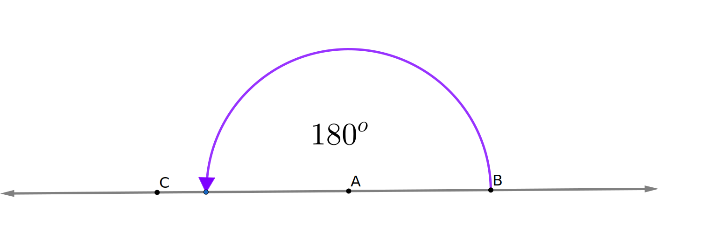

Having looked at area as the measure of the interior space of a polygon, we now turn our attention to measuring angles. What is an angle and how do we measure it? To fully grasp the definition of angle, we need to first understand the notion of ray.
Definition2.2.1.
Ray \(\overrightarrow{AB}\) consists of point \(A\text{,}\) point \(B\text{,}\) and all points on line \(\overleftrightarrow{AB}\) which are on the same side of \(A\) as point \(B\text{.}\) A ray extends infinitely in one direction, has a single endpoint, and cannot be measured.
Definition2.2.2.
An angle is the union of two rays with a common endpoint. In particular, \(\angle BAC\) consists of all points that lie on the rays \(\overrightarrow{AB}\) and \(\overrightarrow{AC}\text{.}\) The common endpoint \(A\) of the rays is called the vertex of the angle and the two rays \(\overrightarrow{AB}\) and \(\overrightarrow{AC}\) are called the sides of the angle.
To think of the measure of an angle as the space between the rays is vague and misleading. The area between the rays is infinite. Note also that the points \(B\) and \(C\) on the sides of \(\angle{BAC}\) do not play a role in defining or measuring the angle. If \(D\) is any other point on ray \(\overrightarrow{AB}\) other than \(A\text{,}\) then \(\angle{DAC}\) is the same angle as \(\angle{BAC}\) and hence have the same measure. Thus it would make no sense to use the linear distance between \(B\) and \(C\) for measuring \(\angle{BAC}\text{.}\) The sides of an angle are infinite and beyond what can be drawn.
Instead, we think of angle measurement in terms of rotational movement around the vertex, specifically the amount of rotation needed to move one side of the angle on top of the other.
To begin our study of angle measure, we will adopt the practice of assuming that there are 360 degrees in a full rotation about any point. The choice of 360 can be traced back to the Babylonians who were studying planetory paths around 400 B.C. and used a base 60 (instead of base 10) number system. One advantage of the number 360 is that it has a lot of factors, including 2, 3, 4, 5, 6, 8.
Figure2.2.3.Full rotation about point \(A\text{.}\)
Figure2.2.4.180-degree rotation about point \(A\)
Suppose point \(A\) lies between points \(B\) and \(C\) on line \(\overleftrightarrow{BC}\text{.}\) In this case, we say that rays \(\overrightarrow{AB}\) and \(\overrightarrow{AC}\) are opposite rays. Since \(\frac{360}{2}=180\text{,}\) a rotation of 180 degrees will take the ray \(\overrightarrow{AB}\) to the ray \(\overrightarrow{AC}\) on the opposite side of \(A\text{.}\)
Continuing, we define the measurement of angles according to what fraction of a full (or half) rotation they represent. Notice how the protractor divides the semicircular arc into 180 segments, eighteen of which are labeled with numerical values. These are multiples of ten, representing \(\frac{1}{18}, \frac{2}{18}, \dots, \frac{18}{18} \) of the half-rotation 180 degrees. To find the measure of \(\angle{DAB}\text{,}\) we place the center dot of the protractor over the vertex \(A\) of the angle and lined up ray \(\overrightarrow{AB}\) with the mark for 0 degrees. The other side of the angle \(\overrightarrow{AD}\) passes through the mark for 40 degrees.
Figure2.2.5.Using a protractor to measure angles.
Exploration2.2.1.Reading a Protractor.
(a)
Use the picture above to determine the following:
The measure of angle \(\angle{EAB}\text{.}\)
The measure of angle \(\angle{CAD}\text{.}\)
The measure of angle \(\angle{CAE}\text{.}\)
The measure of angle \(\angle{EAC}\text{.}\)
(b)
What fraction of a full rotation is 40 degrees?
What fraction of a full rotation is 110 degrees?
(c)
Use a physical protractor and a ruler to draw an angle with measure 78 degrees. Describe your technique.
(d)
It is possible to have angle measures greater than 180 degrees. Use words and/or pictures to describe an angle that measures 240 degrees.
We give a more concise definition of angle measure and introduce the notion of angle congruence.
Definition2.2.6.
The measure of \(\angle ABC\), written \(m\angle ABC\text{,}\) is the number of degrees of rotation about vertex \(B\) needed to move ray \(\overrightarrow{BC}\) onto \(\overrightarrow{BA}\text{.}\)
Definition2.2.7.
If two angles \(\angle ABC\) and \(\angle DEF\) have the same measure, we say that the angles are congruent and write \(\angle ABC\cong\angle DEF\text{.}\) Thus, \(\angle ABC\cong\angle DEF\) means \(m\angle ABC = m\angle DEF\text{.}\)
Subsection2.2.2Angles of a Triangle
Exploration2.2.2.
The GeoGebra app, Angles of a Triangle 1 is useful in completing this activity. You may also perform this activity by carefully cutting out a scalene triangle and tracing it on a sheet of paper.
Figure2.2.8.An interactive GeoGebra applet for Triangle Sum Exploration.
(a)
Rotate triangle \(\Delta ABC\) 180 degrees about the midpoint \(D\) of side \(\overline{BC}\) (see hint). Both the original triangle and the rotated version should be visible. What do you notice?
Note that two of the points are double labeled, once for each triangle. If you rightclick on the label, you can move it to make the original label visible.
Hint.
To perform this rotation in the GeoGebra app, click on the angle rotation icon in the toolbar. Next, click on the interior of the triangle to select the object to be rotated, then click on midpoint \(D\) to identify the center of the rotation. When prompted to input the angle measure, replace 45 with 180. Then click OK.
(b)
Also rotate \(\Delta ABC\) 180 degrees about the midpoint \(E\) of side \(\overline{AB}\text{.}\)
Which angle of \(\Delta ABC\) is congruent to \(\angle A'C'B'\text{?}\)
Which angle of \(\Delta ABC\) is congruent to \(\angle B_{1}'A_{1}'C_{1}'\text{?}\)
(c)
What does this tell you about \(m\angle ABC+m\angle BCA + m\angle CAB\text{?}\) Explain how the picture shows this.
(d)
Make a claim about the sum of the interior angles of a triangle.
Does your work for all triangles or just the one in the picture? To test this in the GeoGebra applet, select the arrow in the tool menu. Then click and drag one of the vertices in the original triangle to change the shape. Do your claims still hold?
Subsection2.2.3Additivity of Angles and Definitions Associated with Angles
In this section, you have likely been assuming the additivity of angle measure. Like the additivity of area 1.1.3 and length 1.2.1, this is intuitively obvious and will prove useful. We state this as a principle and add it to our toolbox. First, we must clarify what we mean by the interior of an angle.
Definition2.2.9.
A point \(D\) is said to be in the interior of \(\angle ABC\) if \(D\) lies between points \(A\) and \(C\) on line segment \(\overline{AC}\text{.}\)
Principle2.2.10.Additivity of Angle Measure.
If ray \(\overrightarrow{AD}\) lies in the interior of angle \(\angle BAC\text{,}\) then \(m\angle{BAC}=m\angle{BAD}+m\angle{DAC}\text{.}\)
Subsection2.2.4Vertical Angles
To conclude this section, we will use what we have learned to make a claim about vertical angles.
Definition2.2.11.
When a pair of lines intersect, each pair of opposite angles formed by the intersection are said to be a pair of vertical angles. Vertical angles share a common vertex, namely the point of intersection, and the sides of one angle will be the opposite rays of the sides of the other angle.
Checkpoint2.2.12.
Determine two pairs of vertical angles in the figure to the right.
Figure2.2.13.Lines intersecting to form vertical angles
Hint.
Each pair of vertical angles consists of two angles.
Checkpoint2.2.14.
What must be true about the measures of any pair of vertical angles? Give a thorough explanation of why this must be true using Principle Principle 2.2.10.
Exercises2.2.5Exercises
Skills and Recall
1.
Use a protractor to measure the angles. You may need to print this picture to make accurate measurements. ADD PICTURE AND PROBLEMS.
2.
Determine the missing angles. ADD PICTURE AND PROBLEMS.
Extending the Concepts
3.
Must the right angle be the largest angle of a right triangle? Explain how this follows from results of this section.
4.
Sketch a few convex quadrilaterals on paper or using the GeoGebra drawing tool.
Figure2.2.15.An interactive GeoGebra applet for Quadrilateral Angle Sum Exercise.
Connect a pair of opposite vertices with a line segment, called a diagonal, to divide the quadrilateral into two shapes.
What two shapes did this create?
What does this tell you about the angle sum of a convex quadrilateral? Explain in words and pictures why this will be true for all convex quadrilaterals.
Experiment with other triangles or by moving vertex A in the applet. What happens to the angle measure when the quadrilateral is no longer convex?
Hint.
Different interpretations of angles in a concave quadrilateral can be made here. In your explanation, you may need to specific whether you are looking only at interior angles or only considering angles less than 180 degrees.